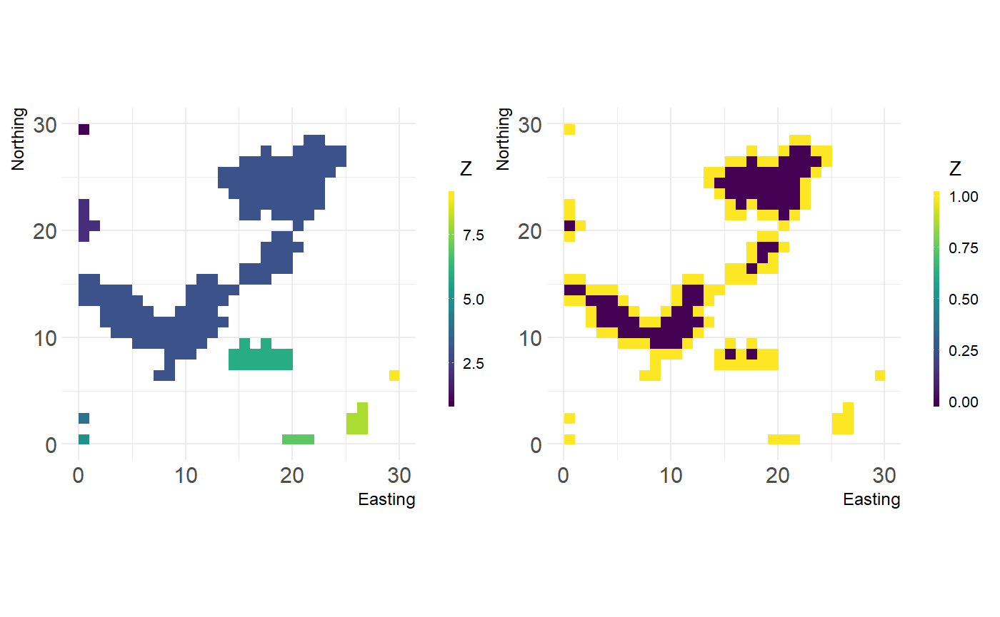

vignettes/articles/comparing_fragstats_landscapemetrics.Rmd
comparing_fragstats_landscapemetrics.RmdThere are a few important differences between FRAGSTATS and landscapemetrics that you should be aware of if you compare results between the two or use both of the tools:
# function to calculate coefficient of variation ((standard deviation divided by the mean) * 100)
cv <- function(x){
(sd(x, na.rm=TRUE)/
mean(x, na.rm=TRUE))*100
}
# 'true' results based an patch level results from fragstats
fragstats_patch_landscape %>%
group_by(TYPE) %>%
summarise(CV = cv(AREA)) %>%
pull(CV) %>%
sort()## [1] 165.0134 187.7700 242.4570## [1] 159.0109 162.6136 228.5906## [1] 165.0134 187.7700 242.4570# 'true' results based an patch level results from fragstats
fragstats_patch_landscape %>%
group_by(TYPE) %>%
summarise(CV = sd(AREA)) %>%
pull(CV) %>%
sort() %>%
round(.,4)## [1] 0.0029 0.0048 0.0225## [1] 0.0027 0.0045 0.0195## [1] 0.0029 0.0048 0.0225We thoroughly compared each of our implemented landscape metrics against the results from FRAGSTATS and will give you here a list with why we think the differences in the results exist.
FRAGSTATS is unfortunately not an open-source project, so we can’t definitely say that some of the metrics have bugs. However, we try to explain our thinking based on several small examples.
Some metrics in FRAGSTATS are interdependent and thus if there is an error starting at the patch level metric it propagates through every depending metric. We list these metrics that are different from their FRAGSTATS implementation here under the metric where the error propagation starts.
Patches with 1 cell get a CIRCLE metric of 0, however, the definition of this metric is:
CIRCLE equals 1 minus patch area (m2) divided by the area (m2) of the smallest circumscribing circle. (…)
The smallest circle around a quadrat should not have the same area as the quadrat, which is the case in FRAGSTATS:
## [1] 0.0001 0.0001 0.0001 0.0001 0.0001 0.0001 0.0002 0.0002 0.0002 0.0003
## [11] 0.0003 0.0003 0.0003 0.0003 0.0004 0.0005 0.0005 0.0007 0.0009 0.0010
## [21] 0.0014 0.0024 0.0035 0.0057 0.0098 0.0148 0.0457## [1] 0.0000 0.0000 0.0000 0.0000 0.0000 0.0000 0.3144 0.3634 0.4907 0.4907
## [11] 0.4907 0.5103 0.5225 0.5225 0.5416 0.5520 0.5544 0.5796 0.6180 0.6180
## [21] 0.6180 0.6255 0.6658 0.6817 0.6850 0.7783 0.8112Further points:
The core metric is defined as:
CORE equals the area (m2) within the patch that is further than the specified depth-of-edge distance from the patch perimeter, […]
This is a visual aid to help understand how we implemented the core metric:
library(raster)
library(patchwork)
# class 1
class_1 <- cclabel(landscape)[[1]]
# core area of every patch in class 1, 1 = Edge, 0 = Core
core <- boundaries(class_1, directions = 4)
# the left plot is class 1 of our landscape,
# the right plot show the core area of these patches (blueish color)
landscapetools::util_plot(class_1) +
landscapetools::util_plot(core)
We look at each patch of every class and count the cells that have 4 neighbors with the value of the specific class. However, while we can prove that our method works as described in the FRAGSTATS manual, the results of the FRAGSTATS software itself cannot be replicated.
lsm_c_cai_cv)lsm_c_cai_mn)lsm_c_cai_sd)lsm_c_core_cv)lsm_c_core_mn)lsm_c_core_sd)lsm_c_cpland)lsm_c_dcad)lsm_c_dcore_cv)lsm_c_dcore_mn)lsm_c_dcore_sd)lsm_c_ndca_sd)lsm_c_tca)From the FRAGSTATS (2015) manual:
GYRATE = 0 when the patch consists of a single cell
… however, FRAGSTATS returns values of 0.5 for patches with a single cell:
## [1] 0.0001 0.0001 0.0001 0.0001 0.0001 0.0001 0.0002 0.0002 0.0002 0.0003
## [11] 0.0003 0.0003 0.0003 0.0003 0.0004 0.0005 0.0005 0.0007 0.0009 0.0010
## [21] 0.0014 0.0024 0.0035 0.0057 0.0098 0.0148 0.0457## [1] 0.5000 0.5000 0.5000 0.5000 0.5000 0.5000 0.5000 0.5000
## [9] 0.6449 0.6449 0.6667 0.6667 0.6667 0.7071 0.7071 0.8493
## [17] 0.9779 0.9921 1.2400 1.2531 1.6339 2.4917 2.5116 3.1784
## [25] 6.2767 8.6143 11.2509There is a mixup between hectare and meter in documentation and code of FRAGSTATS. The program uses hectare, whereas the documentation uses square meter in the formula.
We implemented it with square meters, but the result is in principale correct:
# results from fragstats
fragstats_patch_landscape_para <- fragstats_patch_landscape$PARA
#calculate para metrics
landscapemetrics_patch_landscape_para <- lsm_p_para(landscape)
# compare and multiply by 10000 to get a hectare
fragstats_patch_landscape_para %in%
round((landscapemetrics_patch_landscape_para$value * 10000), 4)## [1] TRUE TRUE TRUE TRUE TRUE TRUE TRUE TRUE TRUE TRUE TRUE TRUE TRUE TRUE
## [15] TRUE TRUE TRUE TRUE TRUE TRUE TRUE TRUE TRUE TRUE TRUE TRUE TRUE